EU → CNSUPPLIER
NETWORK
NETWORK
01 / POSITIONING
先解释自己如何降低采购复杂度
德国分支、欧洲供应商关系和中国本地服务共同构成“跨境工业采购”的可信场景。
01 / READING MAP
舟欧官网首页的关键不是把供应商 Logo 排得很满，而是把“产品分类—品牌可信度—行业适配—联系动作”串成一条面向采购与工程师的浏览路径。案例页将这条路径拆成可复用的模块规则。
德国分支、欧洲供应商关系和中国本地服务共同构成“跨境工业采购”的可信场景。
编码器、泵、阀、电机、夹具、传感器、电气、仪表、机械配件。
PRODUCT FAMILIES / OBSERVED从矿山、冶金、能源到汽车制造，行业入口帮助非产品型访客反向定位。
SERVICE FIELDS / OBSERVED代理/经销品牌、客户 Logo、新闻日期和联系信息共同降低陌生供应商的风险感。
VISIBLE BRAND MARKS / APPROX.02 / PRODUCT ARCHITECTURE
原站产品中心用“设备名词 + 大类”承接复杂 MRO 目录。重构时保留家族选择器、短解释和详情路由，先帮助用户说清任务，再进入参数、品牌与询价。
FAMILY 01 · SENSE
将旋转、位移和位置反馈放在首层目录，用功能问题替代一长串品牌型号，方便工程师先判断接口、精度和环境等级。
进入原站分类 ↗一级入口回答“它解决哪种工业任务”，二级详情再承接品牌、关键规格、交期、替代关系和询价动作。
03 / BRAND NETWORK
品牌中心明确区分“代理品牌”和“经销品牌”，并用 Logo 墙做快速识别。它不是装饰：在工业采购中，品牌授权、替代能力与供货范围需要在详情页继续被证明。
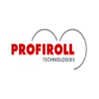
代理 / 经销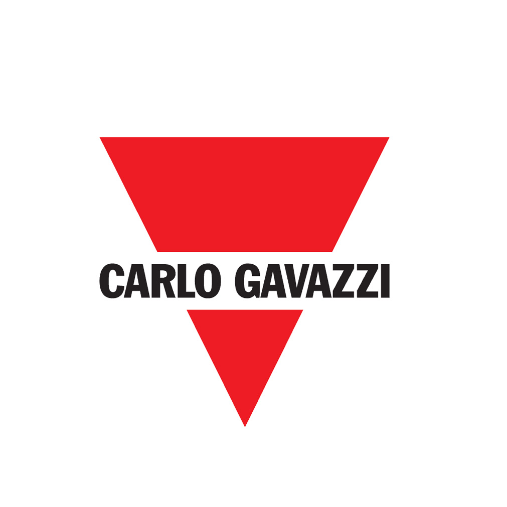
代理 / 经销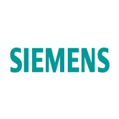
经销品牌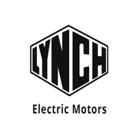
中国总经销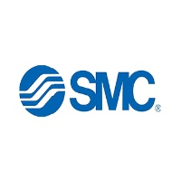
经销品牌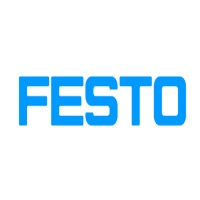
经销品牌04 / COMPANY STORY
官网关于我们将成立年份、德国分支、欧盟供应商关系和服务行业放在一起，解释“工业自动化产品供应商和服务商”的角色。图像把抽象的采购能力落到团队与现场，形成品牌叙事的温度。
05 / SERVICE FIELDS
十二类行业以等权图标环绕展示：矿山、冶金、能源、生物医药、机械加工、船舶、物流、轨交、航空航天、电力、石油化工、汽车制造。交互样例将它们变成“场景—任务—入口”的可用筛选。
06 / NEWS RHYTHM
新闻中心同时容纳公司新闻与行业活动。日期、品牌授权和展会现场是比空泛“我们很专业”更有价值的更新信号。
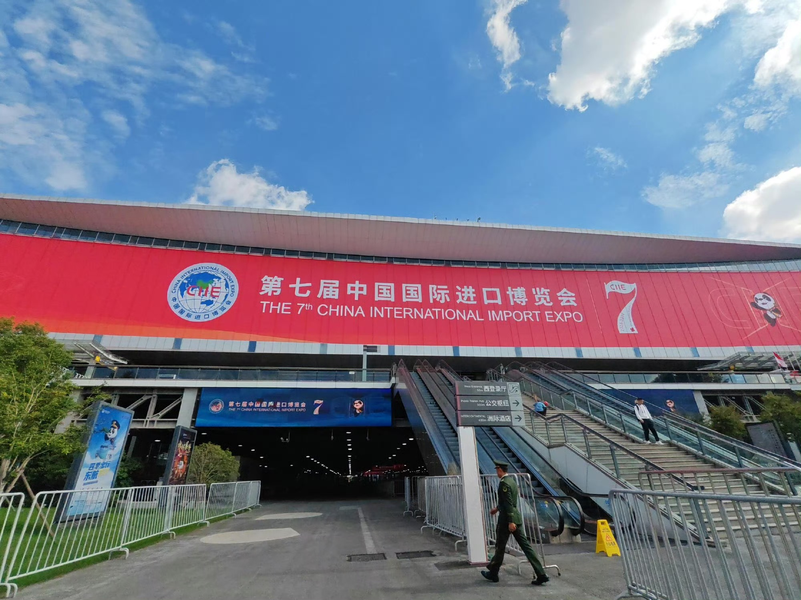
07 / CUSTOMER SIGNALS
Casa、Zeiss、Ford、Volvo 等 Logo 出现在原站合作客户区域。案例页只把它们当作视觉证据条，正式项目需要获得授权并说明合作关系与时间范围。
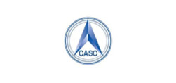
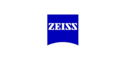
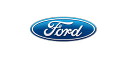
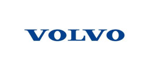
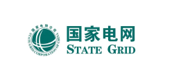
08 / RESPONSIVE AUDIT
原站桌面端以蓝色 Hero、产品与品牌分区承载大信息量，移动端则切换为汉堡菜单、单列卡片和悬浮联系按钮。重构时必须保留可缩放、可键盘操作和低带宽退路。
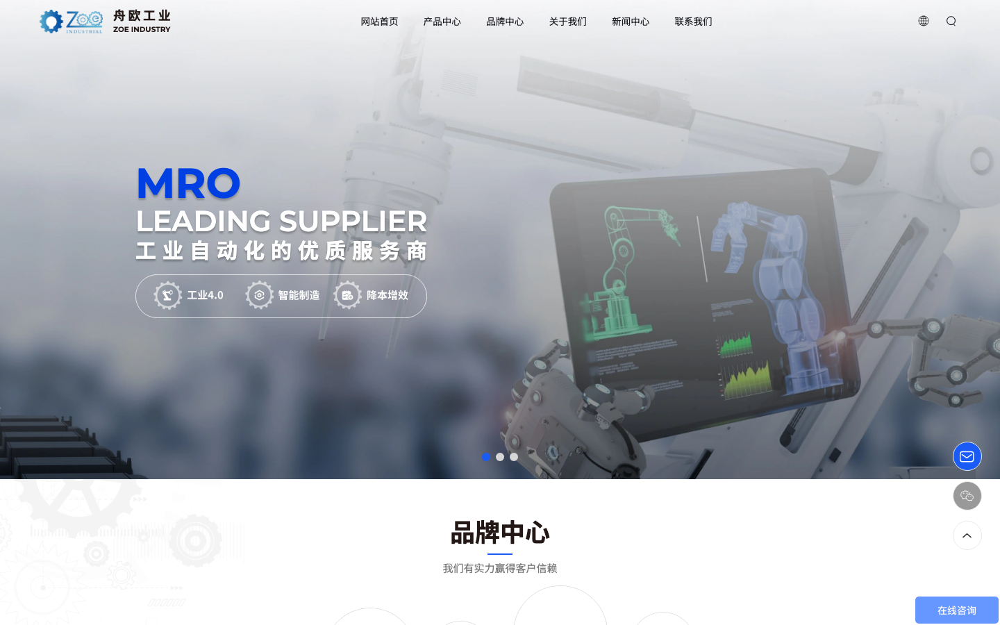
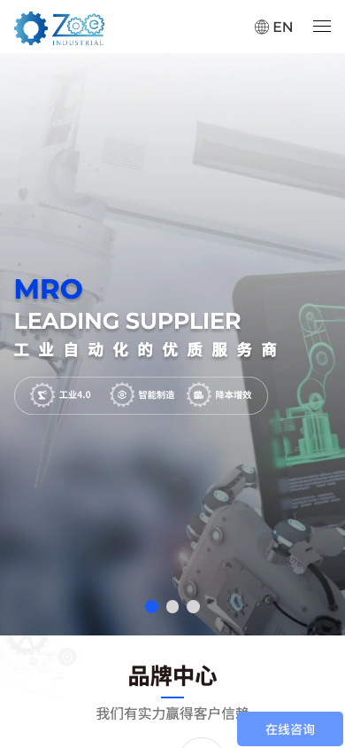
KEEP
REFINE
09 / AI INSTRUCTIONS
以下规则适用于工业自动化、MRO 供应链、代理经销和跨境采购官网。复制信息架构与证据逻辑，不复制舟欧的企业事实、Logo、图片和文案。
编码器、泵、阀、电机等一级入口回答“要完成什么”，二级详情再展开品牌、规格、交期和替代。
代理、经销、OEM、集成和可替代不是同义词。把授权范围、区域、更新时间和证据链接做成字段。
行业卡不是装饰网格；汽车、冶金、电力等入口应继续拆到产线工序、部件需求和咨询动作。
供应商数、客户数、团队规模和成立年份都标注观察日期、公开来源、统计口径和待核验状态。
Swiper、品牌墙、行业环和悬浮联系均提供原生焦点、键盘路径、暂停和 reduced-motion 支持。
10 / SOURCE ARCHIVE
本案例保留舟欧中文首页快照、主 CSS/JS、字体与依赖、Hero/产品/品牌/行业/新闻/客户图片、联系图标和桌面/移动截图。完整映射与清理边界见 manifest.md。
ORIGINAL SITE CONTACT
+86 21 5888 8912sales@zoe-industry.com中国（上海）自由贸易试验区临港新片区港城广场一街坊12号楼501